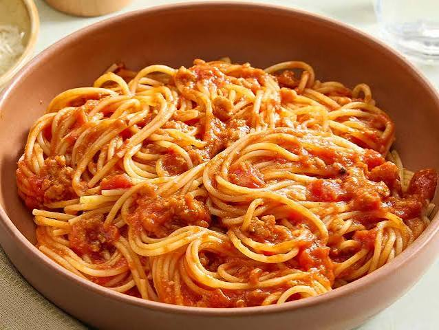
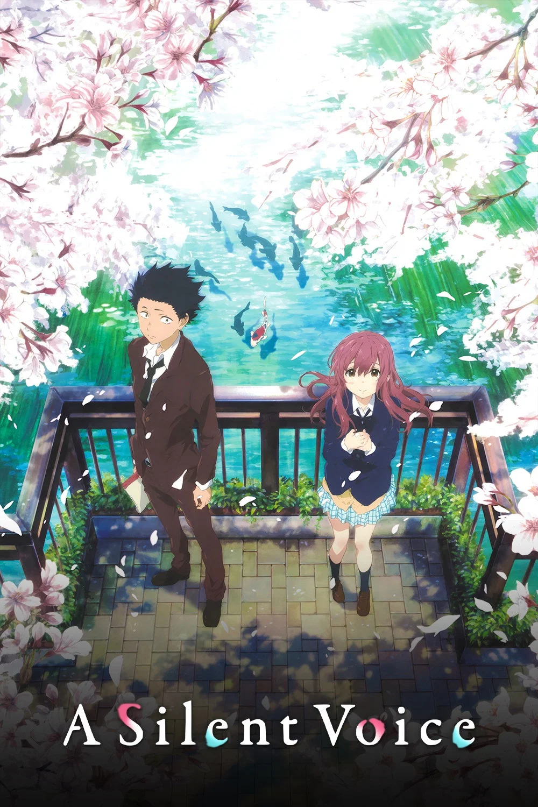

A LITTLE BIT ABOUT MY TASTE
My Favorite Things
Everyone has things they love. Here are some of mine! Click each category to discover more.
01 Favorite Food ＋

My Favorite Food
I love spaghetti because it's a comfort food that reminds me of home.
02 Favorite Color ＋
My Favorite Color
I love green because it gives me a feeling of calmness and reminds me of nature.
03 Favorite Place ＋

My Favorite Place
I would love to visit Japan because of its beautiful scenery, rich culture, delicious food, and peaceful places.
04 Favorite Movie ＋

My Favorite Movie
My favorite movie is A Silent Voice because I got so emotional while watching it. The story made me realize that we should forgive ourselves and continue our lives to become better people.
05 Music +
My Favorite Song
Risk It All by Bruno Mars
06 Favorite Quote ＋
Words I Live By
“Learning never exhausts the mind.”
— Leonardo da Vinci
Our mind is a powerful tool that can help us achieve our goals and overcome challenges. By continuously learning and expanding our knowledge, we can unlock our full potential and lead a fulfilling life.